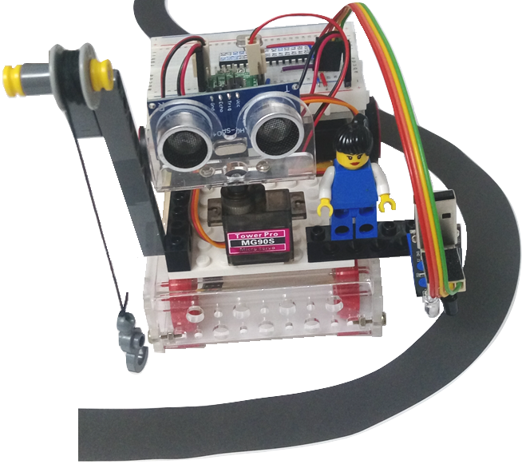

應用電子學
從三用電錶、歐姆定律開始，用 ATmega328P（Arduino）一步步做出可以遙控、感測、連上 WiFi 的輪型機器人。共 9 類、64 個單元。
基礎與儀器Basics & Instruments
- 電源模組
- 三用電錶
- 歐姆定律
入門電路First Circuits
- 紅外線遙控器控制 LED
- 繼電器原理
- 繼電器 + 紅外線遙控器
微控制器ATmega328P · Arduino
- Arduino IDE 開發環境
- 程式控制 LED
- 繼電器程式控制

輪型機器人Wheeled Robot
- 機器人組裝
- 教學平台
- 作品集
致動器Actuators
- 直流馬達
- L9110 馬達驅動 IC
- 步進馬達控制
感測器與顯示器Sensors & Displays
- 聲控
- 超音波感測
- DHT11 溫濕度感測
通訊Communication
- UART 串列通訊
- PC 串列傳輸控制
- I2C
WiFi 物聯網ESP8266 IoT
- ESP8266 簡介與開發工具
- WiFi-UART + Arduino
- WiFi-UART
基礎知識與工具Knowledge & Tools
- 數字系統
- ASCII 碼
- 資料型別